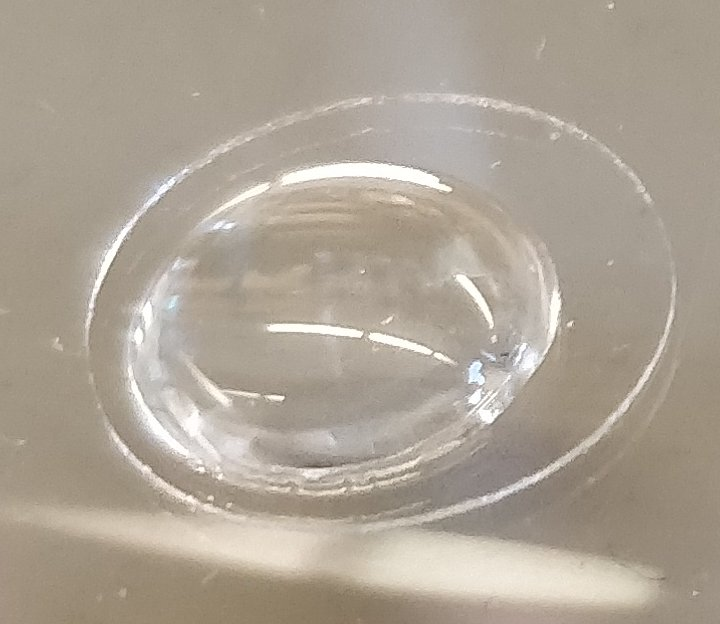
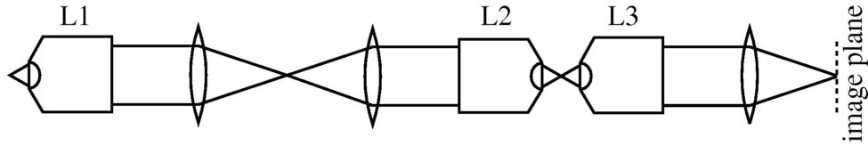
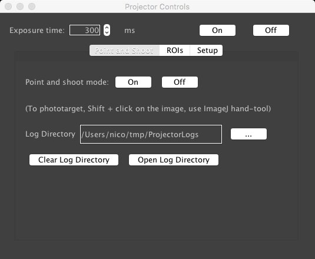
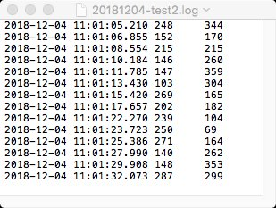
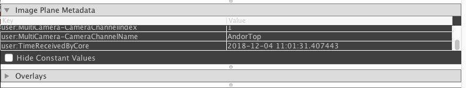
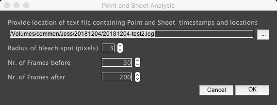
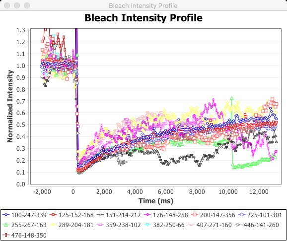

Microscopy and analysis
- diSPIM: organoid mounting
- diSPIM: refractive index matching and remote focus
- OR-Gate device
- Live photo-bleaching and analysis
Nico Stuurman, 2018-12-14
diSPIM: organoid mounting

Kara McKinley

Matrigel mold using PDMS
Pour Matrigel/organoids in mold, harden, invert, remove PDMS

Matrigel mold using PDMS
Pour Matrigel/organoids in mold, harden, invert, remove PDMS

FAIL!
diSPIM: organoid mounting
Solution: Oxygen plasma treated coverslip


WIN!
diSPIM: refractive index matching and remote focus
Design of remote focus
Millett-Sikkinget al., https://calico.github.io/remote_refocus/
Design of remote focus

Botcherby et al., https://doi.org/10.1016/j.optcom.2007.10.007
- L2: Optimum mag: M(L1)/(n1/n2) ~ 16/1.33 = 12
- Design: L2=10xNA 0.4(Olympus), L3=20x0.75NA (Nikon)
- 4f design: Remove scanner. Reverting to current config will take ~ 1 hour
OR-Gate device
- Hardware synchronization using electrical signals
- Problem: combining signals from multiple cameras
- Solution: Powered, logical OR gate
- Now have reproducible design
OR-Gate device


Live photo-bleaching and analysis

Jess Sheu-Gruttadauria
Plan:
- Bleach live, using point and shoot
- Automatically find bleach spot
- 1: Get intensity at bleach spot
- 2: Track particle, get intensity as function of time, for bleached area and particle
- Calculate exchange within particle and between particle and outside
Live photo-bleaching and analysis
Live photo-bleaching and analysis
Live photo-bleaching and analysis


Live photo-bleaching and analysis


Next: track particles by cross-correlation